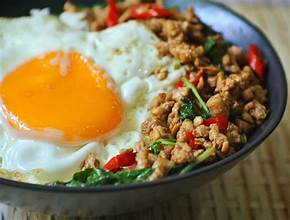

แจกสูตรผัดกะเพราหมูสับ

ส่วนประกอบที่สำคัญ
เนื้อหมู 400 กรัม
ใบกะเพรา 50 กรัม
กระเทียม 2 หัว
พริกแดงจินดา 12 เม็ด
พริกแห้งแดงจินดา 6 เม็ด
น้ำปลา 1 ช้อนโต๊ะ
ซอสปรุงรสฝาเขียว 1 1/2 ช้อนโต๊ะ
ซอสหอย 3 ช้อนโต๊ะ
ซีอิ้วดำหวาน 1/2 ช้อนโต๊ะ (ไม่ชอบกลิ่นตัดออกได้)
น้ำตาลทราย 1/2 ช้อนโต๊ะ
วิธีทำ ผัดกะเพราหมูสับ
หั่นหมูสันคอออกเป็นชิ้นๆ แล้วสับหมูออกให้ละเอียดตามความต้องการ แล้วพักไว้
โขลกพริกแห้งให้ละเอียด แล้วใส่พริกแดงจินดา และกระเทียมโขลกตามลงไปให้ละเอียด (สามารถปั่นแทนได้ ตามความชอบ)
ตั้งกระทะให้ร้อน ใส่น้ำมันพืชลงไปพอประมาณ ผัดพริกและกระเทียมให้มีกลิ่นหอม
เมื่อพริกกระเทียมหอมได้ที่แล้ว ใส่หมูสับลงไปผัดให้กระจาย ไม่เกาะกันเป็นก้อน ผัดให้เข้ากับพริกกระเทียม ให้หมูสุกในระดับนึง แล้วปรุงรสด้วย น้ำมันหอย น้ำปลา ซอสปรุงรส และซีอิ๊วดำหวาน น้ำตาล เล็กน้อย เร่งไฟผัดให้เข้ากัน ชิมรสชาติ แล้วใส่ใบกะเพราลงไปผัดให้เข้ากัน ปิดเตา ตักเสิร์ฟ
คุณค่าทางโภชนาของผัดกะเพรา
คุณทางโภชนาการต่อหนึ่งหน่วยบริโภค
หน่วยบริโภค
1 จาน
231g
% ร้อยละของปริมาณที่แนะนำต่อวัน*
ไขมันทั้งหมด
6.9g
10%
โซเดียม
852.5mg
36%
โพเเทสเซียม
567.4mg
17%
โปรตีน
32.2g
65%